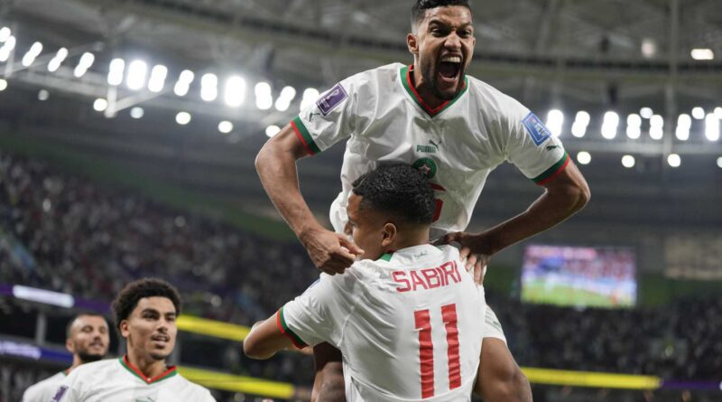

Le Maroc a réussi un autre choc de la Coupe du monde dimanche, et la « Golden Generation » belge vieillissante a pris le coup cette fois.
La défaite 2-0 dans le groupe F à Doha, au Qatar, a laissé Kevin de Bruyne et les demi-finalistes de 2018 en péril d’une sortie en phase de groupes.
De Bruyne n’a pas fait avancer la Belgique contre le Maroc, le capitaine Eden Hazard a été retiré après une heure et le gardien Thibaut Courtois était probablement fautif pour le premier but.
« Nous n’avons pas encore vu la meilleure Belgique », a déclaré Roberto Martinez, un Espagnol qui a entraîné l’équipe pendant six ans. « Nous n’avons pas été nous-mêmes. »
Le capitaine marocain Romain Saiss a donné l’avantage à son équipe avec une déviation à peine perceptible de sa hanche après un coup franc d’Abdelhamid Sabiri à la 73e minute qui est passé sous le corps de Courtois – pour beaucoup, le meilleur gardien du monde.
Zakaria Aboukhlal a guidé un tir dans le toit du filet sur une passe de Hakim Ziyech dans les arrêts de jeu pour porter le score à 2-0 alors que la défense belge, comptant plus de 300 apparitions internationales mais ancrée par deux joueurs dans la trentaine, a été battue par un attaquant rapide de 22 ans disputant sa première Coupe du monde.

Le Maroc, qui a été acclamé par le tonnerre de ses supporters au stade Al Thumama, avait débuté au Qatar par un match nul 0-0 contre la Croatie.
« Nous sommes ravis de cela après la Croatie et la Belgique », a déclaré l’entraîneur marocain Walid Regragui. « C’est absolument exceptionnel pour le Maroc. »
La Belgique, classée n ° 2 au monde derrière le Brésil, avait remporté ses sept derniers matchs de groupe à la Coupe du monde avant sa défaite, mais cette séquence comprenait une victoire laborieuse 1-0 contre le Canada pour ouvrir le tournoi de cette année.
Le Maroc a dépassé la phase de groupes une fois lors d’une Coupe du monde, en 1986. Et les choses étaient en ébullition avant le tournoi après le limogeage de l’ancien entraîneur Vahid Halilhodzic et l’arrivée de Regragui fin août, moins de trois mois avant le Mondial. Tasse. Regragui n’a eu que trois matches amicaux pour faire sa marque dans l’équipe avant d’affronter la Croatie lors de la Coupe du monde.